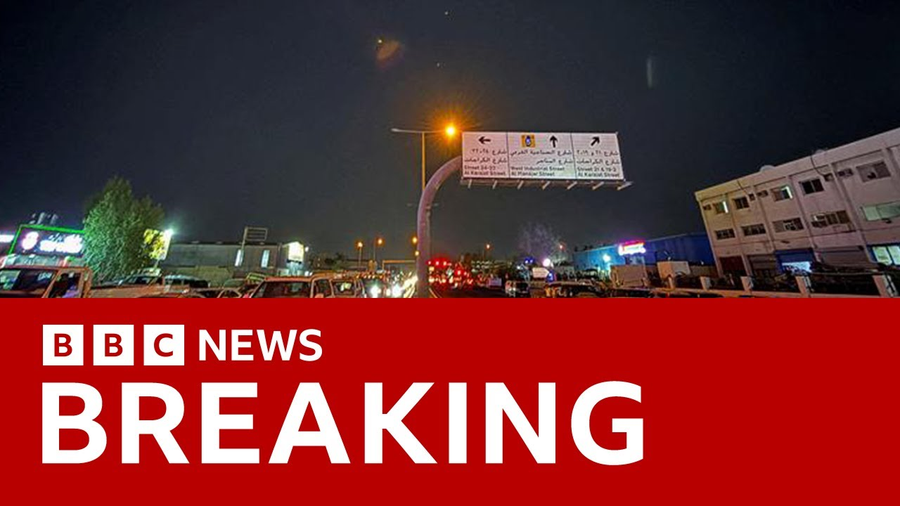

【BBC新闻：伊朗向卡塔尔和伊拉克的美军基地发射导弹】
Summary: Iran retaliated by firing missiles at US bases, signaling its capability amid heightened tensions, while regional dynamics and geopolitical balances remain uncertain.
摘要： 伊朗通过向美军基地发射导弹进行报复，展示其能力，紧张局势加剧，地区动态和地缘政治平衡仍不确定。

⏱️ Estimated Reading Time: 18 min
📚 六级生词 📚 雅思生词 📚 托福生词 📚 专八生词 📚 SAT生词 📚 考研生词 📚 GRE生词 📚 高考生词
This is BBC News.
这里是BBC新闻。
I'm Lewis Fawne Jones.
我是刘易斯·福恩·琼斯。
We are bringing you continuing coverage of the latest breaking news, the developments, the reports that Iran is striking a US run military base in Qatar.
我们为您带来伊朗袭击卡塔尔美军基地的最新突发新闻、进展和报道的持续报道。
Let me run you through some of the details that we have, what we know right now and what we're still waiting for confirmation on.
让我为您梳理一些我们掌握的细节、目前已知的信息以及仍在等待确认的内容。
We know that Qatar closed its airspace, diverted planes away from it.
我们知道卡塔尔关闭了领空，并让飞机改道。
We know that the reports are that the White House accepted that there were credible threats to this airbase, this US run airbase.
据报道，白宫承认该美军基地面临可信威胁。
Then reports came through from AFP journalists initially of explosions over Doha.
随后，法新社记者最初报道了多哈上空的爆炸。
These are the live pictures over Doha, of course, the capital of Qatar.
这些是多哈的实时画面，当然，多哈是卡塔尔的首都。
So just to remind you that this credible threat that was reported a short time ago is to the Al-Udid US run airbase in Qatar.
提醒您，不久前报道的这一可信威胁是针对卡塔尔的乌代德美军基地。
It's basically the biggest US run airbase in the Middle East, in the region and was seen as a likely logical potential target for Iran to retaliate against US forces after the US attack on its nuclear facilities over the weekend.
这基本上是中东地区最大的美军基地，被视为伊朗在周末美国袭击其核设施后对美军进行报复的潜在目标。
So there had been receipts of a credible threat to this US airbase and in the last few minutes explosions heard over the capital Doha.
因此，该美军基地此前已收到可信威胁，而就在过去几分钟，多哈首都上空听到了爆炸声。
Let's take a look at these pictures from a little bit earlier and let's take a listen as well.
让我们看看稍早的画面并听听声音。
So those pictures were just from the last 20 minutes or so.
这些画面来自大约20分钟前。
We are back now to the live pictures just to explain the geography and the timing of all this.
我们现在回到实时画面，解释这一切的地理位置和时间。
These are the live pictures of Doha just on 8 o'clock in the evening as you can see there.
这些是多哈的实时画面，时间是晚上8点。
And within the last 30 minutes those pictures that we just ran showing those explosions near being heard near Doha.
在过去30分钟内，我们播放的画面显示多哈附近听到了爆炸声。
Now we understand that the credible threat was to the Al-Udid US run airbase, not directly the civilian areas of Doha itself, but instead this US run military airbase.
目前我们了解到，可信威胁是针对乌代德美军基地，而非多哈的平民区域。
Now we understand precautionary measures have been taken at this airbase.
现在我们知道该基地已采取预防措施。
Our planes potentially have flown out the way and of course defences at the ready.
飞机可能已飞离，防御系统也已就位。
This comes after the shelter in place order for US citizens in Qatar a little earlier.
此前，美国驻卡塔尔公民收到了就地避难令。
And one new line to bring you just in the last couple of minutes just since I sat in the chair here and taken over from my colleague.
最新消息是，就在我接替同事的几分钟内。
Donald Trump we understand from the Reuters news agency citing CNBC citing an admin official.
据路透社援引CNBC报道，特朗普目前正与国防部长和参谋长联席会议成员在战情室。
It's likely convoluted there but I just wanted to give you where we're getting this from.
消息来源可能有些复杂，但我想说明我们是从何处获得这一信息的。
The line is this.
消息如下。
Donald Trump is currently in the situation room with defense secretary and the joint chiefs.
特朗普目前正与国防部长和参谋长联席会议成员在战情室。
So Donald Trump currently in the situation room with the defense secretary and joint chiefs.
特朗普目前正与国防部长和参谋长联席会议成员在战情室。
That is from CNBC, American Network citing an official in the administration getting to us here via the Reuters news agencies.
这一消息来自CNBC，美国网络援引政府官员，通过路透社传递给我们。
Our team in the US will be following that up.
我们的美国团队将跟进此事。
So if you have just joined us in the last few minutes these are the lie pictures that we are showing you right now over Doha.
如果您刚刚加入我们，这些是我们正在播放的多哈实时画面。
The reason being that explosions were heard over Doha.
原因是多哈上空听到了爆炸声。
Potential credible threat was suspected at the Al-Udid US run military base.
乌代德美军基地可能面临可信威胁。
It's the biggest US base in the Middle East in the region and we're seen as a potential target for Iran to retaliate after those strikes when the US got involved over the weekend and of course hit those nuclear facilities.
这是中东地区最大的美军基地，被视为伊朗报复的潜在目标。
So all these developments reaching us in the last 20, 30 minutes or so.
所有这些进展发生在过去20到30分钟内。
So let's just try and pause for breath for a moment now.
现在让我们稍作停顿。
We've established the live pictures and we've established those pictures of the explosion that we have.
我们已经展示了实时画面和爆炸画面。
Let's speak now to the BBC World Service and if you say, Konov.
接下来让我们联系BBC国际部。
So just bring us up today given what we've just been learning over the last few minutes of how things stand there where you are.
鉴于我们过去几分钟了解的情况，请告诉我们您所在地的现状。
Let's right now in Iraq also we heard and confirmed that Iraq's al-Assad base which housing US troops has been attacked but apparently according to sources that talk to us two missiles were fired towards the annual Assad which is the US's biggest base in Ambar province and these two missiles as our military sources are saying has been intercepted.
与此同时，在伊拉克，我们确认阿萨德美军基地遭到袭击，但据消息称，两枚导弹被拦截。
We still don't know that if this is the first wave of attack or this is all that Iran wanted to do but we can confirm that Iran has carried out the attack calling it its naming tidings of victory and it doesn't say more Iran's news agencies that what comes next but they say that Iran simultaneously has attacked in the US bases in Qatar, Bahrain, Kuwait and here in Iraq.
尚不清楚这是第一波攻击还是伊朗的全部行动，但可以确认伊朗已发动攻击，并称其为“胜利的预兆”。伊朗还同时袭击了卡塔尔、巴林、科威特和伊拉克的美军基地。
It was expected.
这些国家此前已高度戒备。
All these countries were in high alert and this morning most American citizens in Qatar they received first email from US Embassy asking them to stay in sheltered area and not to come out until further notice and then after that a few hours after officially the US Embassy posted that warning to on its ex-platform and then that that was followed by the UK warning to its British citizens in Qatar asking the same precautionary step to take and stay in sheltered area so step by step hours by hours we could feel in the region that that is coming but as I said it is not clear that it is the the whole thing that Iran wanted to do but or it is only the first wave.
今天早上，卡塔尔的大多数美国公民收到了美国大使馆的电子邮件，要求他们留在避难区。随后，英国也向其公民发布了类似警告。我们感受到局势正在升级，但尚不清楚这是否是伊朗的全部行动。
I remember in 2020 when the US killed in votes forces commander or your GCA votes forces commander Qasim Soleimani here in Baghdad and assassinated him.
我记得2020年美国在巴格达暗杀了伊朗圣城旅指挥官卡西姆·苏莱曼尼。
Iran answered retaliated by firing two or three waves of ballistic missiles two words as at air base and also air bill air base housing US and coalition troops.
伊朗通过发射两到三波弹道导弹进行报复，目标是驻扎美军和联军部队的空军基地。
So it is it can be expected that this is only the first wave or it can be only the thing that Iran just wanted to send a message to the US that it can reach its bases.
因此，这可能只是第一波攻击，或者伊朗只是想向美国传递一个信息，即它有能力打击其基地。
Although this allodate base which is you mentioned that it is the biggest and most important base in the region is massive is massive and a very well protected bases.
尽管这个基地是该地区最大、最重要的基地，规模庞大且防护严密。
I have traveled to several US bases and I that is the most protected base I can tell and before this attack there was a lot of alarms and warnings.
我曾去过多个美军基地，这是我所知防护最严密的基地，此次袭击前已有大量警报和警告。
So that led to US forces evacuating their fighter jets and also some other equipments to safer areas.
因此，美军将战斗机和部分其他装备转移到了更安全的区域。
And now if you say more broadly now then given these strikes how does that change the international geopolitical balance of power there how does it change relations between Iraq and Iran and potentially here Qatar and Iran.
从更广泛的角度来看，这些袭击将如何改变国际地缘政治力量平衡，以及伊拉克与伊朗、卡塔尔与伊朗的关系。
To be honest Lewis I think Iran is in all these countries right now Iran is in a very difficult situation and no one can deny that Tehran is in a difficult delicate situation that has lost its trust to neighboring country as well including Iraq.
说实话，刘易斯，我认为伊朗目前在这些国家中处境艰难，德黑兰处于微妙困境，失去了包括伊拉克在内的邻国信任。
That despite that Iraqi government multiple times has said that they oppose the U.S. Israeli jets using its aerospace to attack Iran but they can't do anything more than that.
尽管伊拉克政府多次表示反对美以战机利用其领空袭击伊朗，但他们无能为力。
And there are reports that even US some of the US fighters has used and then they have used Iraqi aerospace which is closest country to Iran.
有报道称，部分美军战机甚至利用了距离伊朗最近的伊拉克领空。
And Iran had once open time it had a very deep influence in this country but still its aerospace was open to these jets to fly over and reach Iran and target.
伊朗曾在该国有很深的影响力，但其领空仍对这些战机开放，使其飞越并袭击伊朗。
Although Iraqi government says they cannot do much about these jets they are opposing they have complained against these to the UN but not in further steps they can take.
尽管伊拉克政府表示无法阻止这些战机，他们已向联合国提出抗议，但无法采取进一步行动。
And other countries other Arab countries in especially the Iran the Persian Gulf despite that they have built a very close relationship recently with Iran but also when it comes to the U.S. they have other calculations.
其他阿拉伯国家，尤其是波斯湾国家，尽管近期与伊朗关系密切，但在涉及美国时仍有其他考量。
Even in their statements regarding US attack on Iran's nuclear sites they were so cautioned they were so delicate in putting in words that they are condemning this attack their behavior was different of how they put a statements out when Israel attacked Iran.
即便在谴责美国袭击伊朗核设施的声明中，他们也措辞谨慎，与以色列袭击伊朗时的声明态度不同。
So you can feel that have Tehran can feel regarding the situation and I think Tehran is in the situation that it feels that there is no reason to step back and think about its neighboring countries and its relationship right now with Persian Gulf countries.
因此，德黑兰可能感到目前没有理由退让或考虑与波斯湾国家的关系。
I think you said thank you very much for the moment so this is a fast moving fast developing situation of course I just want to bring you again those latest pictures we have showing the explosions in the skies of Qatar.
感谢你的分析，目前局势发展迅速，我将再次展示卡塔尔上空爆炸的最新画面。
We will have them in just a minute apologies for that we will just get those lined up again they're the only pictures we have so far let's take a look and I'll listen.
稍后将为您呈现这些画面，抱歉稍等，这是我们目前唯一的画面，让我们看一下。
So we're just going to play those through for you again because it's clearly quite tricky to see let's take a look so that's the second time through there of those pictures we will keep playing those pictures as well as keeping across the live pictures for you so this is a developing situation my colleagues here Vash Adlan is with me here here Vash just talk us through the very latest if you would.
由于画面较难看清，我们将再次播放，这是第二次播放，我们将持续更新画面，同事瓦什·阿德兰将带来最新进展。
Well I'm just going to give you the reactions coming out of Iran a few minutes ago Iran in state TV confirmed the attack as well and then we had a statement coming out from the IRGC which is the Iran's revolutionary guards they confirm that they have carried out a missile attack against the US bases and Qatar but nothing about Iraq.
几分钟前，伊朗国家电视台确认了袭击，伊朗革命卫队也发表声明，证实对卡塔尔美军基地发动了导弹袭击，但未提及伊拉克。
There was some reports about attacks on US bases in Iraq as well they didn't mention Iraq it was just about Qatar itself they said that we have launched these missiles they didn't speak of whether they were they had any reports of impacts or so on they just described their attacks as very successful.
尽管有报道称伊拉克美军基地也遭袭，但声明仅提到卡塔尔，称导弹发射非常成功，未提及具体打击效果。
And then you had another body in Iran which is the High National Security Council they also issued a communique and they went into more details saying that they fired six rockets six is the same number of bombs that were used by the US to attack the four d'Ozhai they specifically mentioned that so I guess it was a symbolic gesture firing exactly six missiles.
伊朗最高国家安全委员会进一步详细说明，发射了6枚火箭弹，与美国袭击福尔多核设施使用的炸弹数量相同，具有象征意义。
And they also stressed that we tried to avoid any civilly incasualties our target was specifically the US base and they also went at some length to say this this has or should not have any impact on what they described as Iran's friendly and brotherly relations with our Qatari neighbors.
他们强调目标是美军基地，避免平民伤亡，并称此举不应影响伊朗与卡塔尔的友好关系。
So these two institutions have confirmed the attacks and the motives behind it.
这两家机构已确认袭击事件及其动机。
We haven't had any report yet of moments of impact.
目前尚未收到任何关于袭击具体时刻的报告。
Though some Iranian outlets are showing videos which we don't know where they haven't been verified yet.
尽管一些伊朗媒体展示了未经核实的视频。
Showing one one impact from the missiles as well but that's not confirmed.
视频显示了一次导弹命中，但尚未得到证实。
So that's as much as we can tell you so far.
目前我们只能提供这些信息。
Interesting really interesting.
非常有趣。
And just give us a sense of of background those sources and the media in Iran.
让我们了解一下伊朗这些消息来源和媒体的背景。
Just talk us through how credible they are how they operate and what kind of freedom reminds us of the situation in the country.
请谈谈它们的可信度、运作方式以及所反映的国家现状。
Well the state media is obviously completely under the control of the state.
国家媒体显然完全受政府控制。
So we just look at that mainly for confirmation of you know what we already want to get official confirmation from.
我们主要依赖它来获取官方确认的信息。
So that's that's that's state media as a criteria of confirmation of certain kinds of news.
因此，国家媒体是某些新闻的确认标准。
Otherwise the Iranian authorities have instructed the press and other media outlets other than the state run TV to be very careful of what they report.
此外，伊朗当局要求非国营媒体的报道必须非常谨慎。
Very much similar to what the IDF is also instructing the reporters inside inside Israel of you know not to show places where they think you know strategic targets might be placed and so on.
这与以色列国防军对国内记者的要求非常相似，即不得展示可能涉及战略目标的地点。
Whereas in Iran it's not adhered to as much.
但在伊朗，这一规定并未被严格遵守。
User generated material in Iran is extremely rife extremely prolific.
伊朗的用户生成内容极为泛滥。
So they keep on going on Instagram and you can get a very good sense of the targets that the Israelis are hitting inside the country across the country military bases infrastructure and so on.
因此，通过Instagram可以清晰了解以色列在国内袭击的目标，如军事基地和基础设施。
And that's why a lot of news sources rely very heavily on those images coming out of Instagram and Iran.
这就是许多新闻来源高度依赖伊朗Instagram内容的原因。